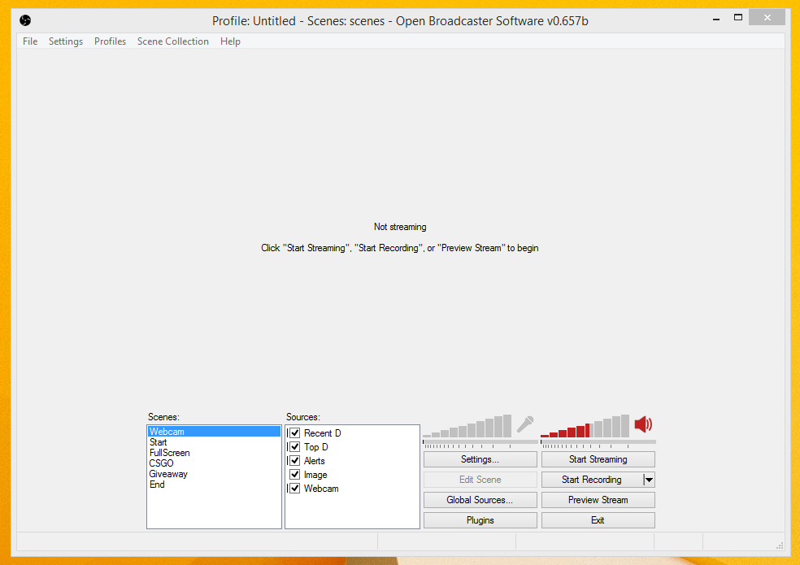
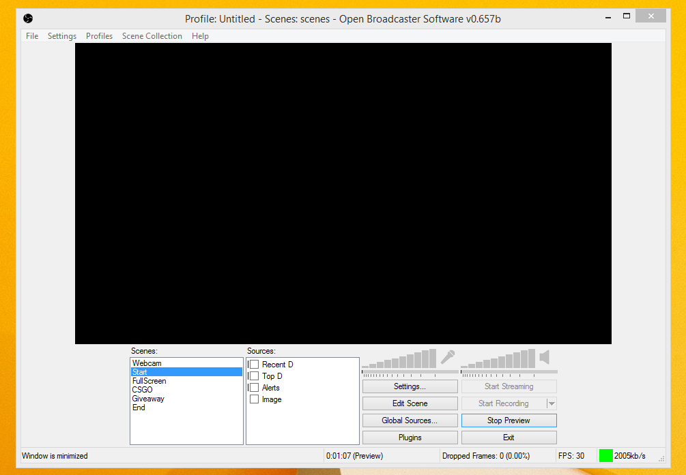
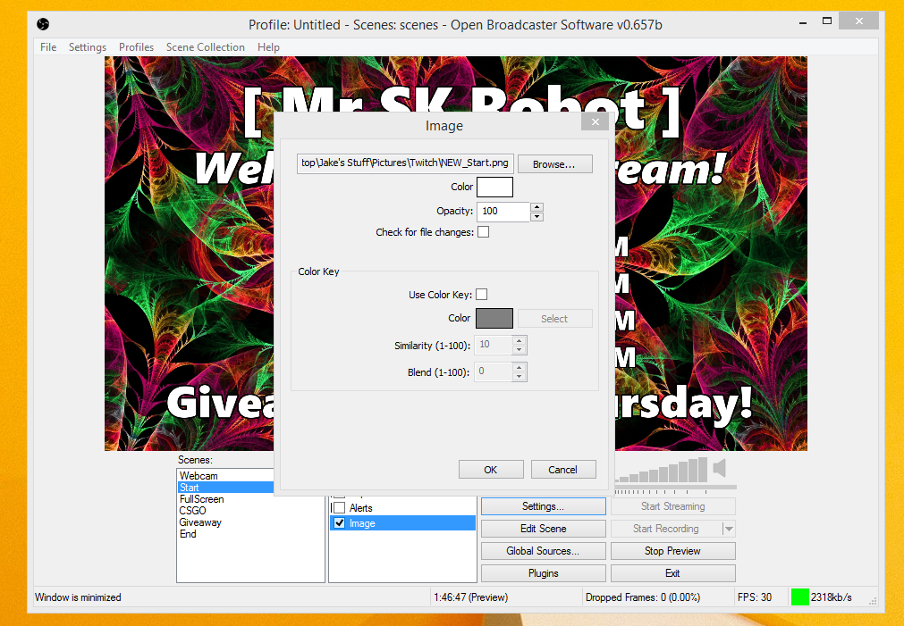
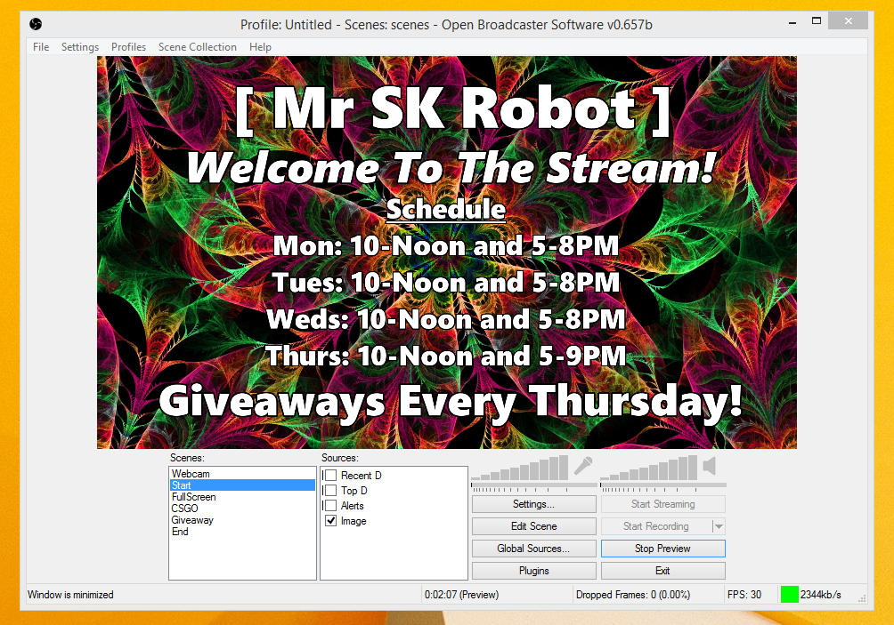
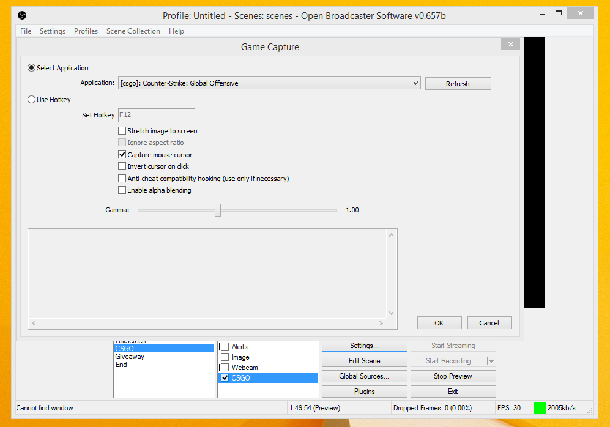
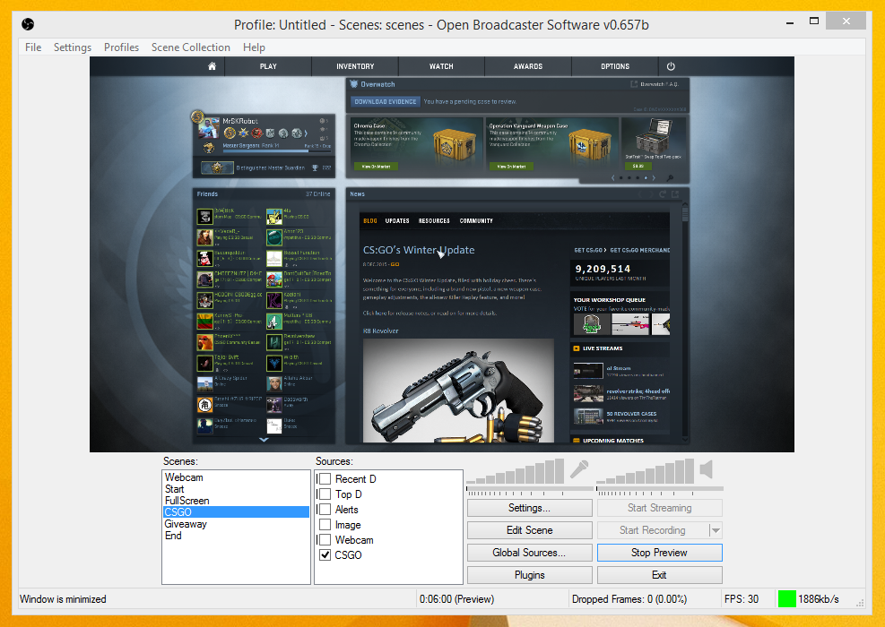

Double click on the OBS icon to open it.
Click Preview Stream
Right click in the scene area and click Add Scene. Also name this scene something easy for you to remember what it is.
There are many different sources you can add to your scenes. All sources are able to be resized, but I will demonstrate how to add an image and a game capture.
Right click the sources area and hover over add, then click image. Name it something that makes sense to you.
Click the browse button and navigate through your files until you find the correct image you would like to use. Click OK when you are finished.
Start up a game you want to capture. Right click the sources area and hover over add, then click Game Capture. Name it something that makes sense to you.
If you already have your game open, you can click on the Application drop-down-menu and click on your game you would like to capture. If it doesn't appear, try opening the game again and clicking refresh. Click OK when you are finsihed.
Congratulations! You have followed our guide and are ready to begin streaming. All you need to do is click the Start Streaming button and you will be ready to go! Good Luck. For a video tutorial on how to use OBS, click here.